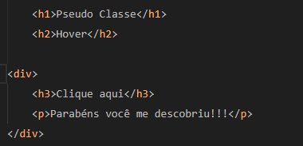

Estilização CSS
Estilos Inline
Estilos inline como o próprio nome diz,são estilos no CSS que são feitos na mesma linha do código.Esses tipos de estilos são usaveis mas são os menos recomendados para programadores profissionais,pois são estilos complicados pois você tem que ficar replicando código,ou se caso precisar fazer alteração em mais de um isso pode ser prejudicial,pois vai ter que alterar um de cada vez perdendo assim tempo,e sendo uma coisa chata de se fazer!
Veja o exemplo:
Como pode-se ver no código acima,o estilo e aplicado linha por linha,e da para fazer qualquer estilização como mudar cor de fundo,organizar as palavras,centralizar elas,o único problema deste tipo de estilo e que ele é feito linha por linha,o que além de deixar o código bagunçado,deixa ele dificil de mecher se ocorrer alguma mudança por parte de cliente.
Estilos Internos
Estilos internos não são muito diferentes dos estilos inline,a unica diferença é que o estilo em vez de ser aplicado diretamente na linha do código,ele vai ser aplicado internamente no cabeçalho <head> do código.
Veja o exemplo:

Como se ve no exemplo acima,o código é lançado sobre o cabeçalho do arquivo html,fazendo com que facilite a organização do código evitando demora para encontrar e corrigir possiveis erros ou alterações na página.
Estilos Externos
Estilos externos são aqueles que são feitos separadamente do nosso código,tendo um link de ligação com a nossa página para que os estilos criados são aplicados e esse é a melhor forma de estilização para poder usar,pois da para usar em mais de um site.
Veja o exemplo:
Vendo na imagem acima,você cria uma ligação com um arquivo externo fora do seu html,e dentro desse arquivo você joga os estilos que vão ser aplicados a sua página.
Resultando:
Cores em CSS
Representando as Cores
Um site precisa de cor para poder chamar a atenção de quem visita,e escolher o tipo de cor ou variação de cores
que um site vai possuir vai definir se a pessoa vai ficar ou não no seu site por muito tempo,geralmente as
pessoas
costumam levar cerca de 90 segundos para decidir se vão ficar em um site ou não,e esse é o tempo que voce tem
para
mostrar para as pessoas o potencial do seu site!
Em CSS temos algumas 4 formas para representar as cores,são elas: Nomes, Decimais e Hexadecimais, RGBs e por
HSL.
Nomes
A representação são as padrões que costumamos usar em nossos editores de códigos usando a tag
<style="background-color:***; color:***;">, veja o exemplo:
Como podemos ver,nesta representação é usada o nome das cores em ingles para poder representar que cor vamos querer em nosso site,é o jeito mais simples e rapido,e como resultado temos o fundo com um azul meio ciano e as letras da cor rosa.
Hexadecimais
O código hexadecimal é o código que vai determinar a tonalidade da cor que vamos usar,os códigos hexadecimais são numeros que vão de 0 a 16,porém a numeração é decimal pois os numeros vão de 0 a 9 pois o numero 10 já são dois algarismos juntos então acaba que como os numeros só vão de 0 a 9 é complementado o resto dos que faltam para totalizar 16 com as letras A,B,C,D,E,F.
Como pode-se observar,o código para definir a tonalidade da cor que usaremos temos uma mistura de numeros e letras chamados estes de hexadecimais.E como resultado temos:
RGB
A famosa sigla RGB(red, green, blue) também é uma das formas de definirmos a cor que vamos usar em nosso site.
O controle de cores RGBs funciona da seguinte maneira,os numeros que estão dentro do parenteses logo após a sigla RGB siguinificam: presença de vermelho, presença de verde e presença de azul,e assim são de definidas as cores usando o parâmetro RGB.
HSL
A representação de cores nas CSS usam de uma ultima forma de adicionarmos cores a um site que é usando caracteristicas de cores através da sigla HSL(Hell Saturation Luminosity)que é representado da seguinte maneira.
Como podemos ver na imagem representada acima nos temos 60 de matiz, 100% de saturação e 40% de
luminosidade gerando assim a cor amarela.No outro nós possuimos 100 de matiz, 100% de
saturação e 40% de luminosidade o que nos gera a cor verde.
Gerando assim:
Harmonia de Cores
Circulo Cromático
Cores Primárias
As cores primárias dentro do circulo cromático são amarelo, vermelho e azul,elas são simetricas formando um triangulo equilatero.
Cores Secundárias
As cores secundarias são o laranja o verde e o violeta sendo cores mais escuras,bem complexas de se usar.
Cores Terciárias
As cores terciárias são mistura das cores primárias e secundárias e sempre que formos usá-las nos primeiro colocamos o nome das cores primárias e logo após o nome das cores secundárias,formando assim as cores terciarias.E são elas amarelo-esverdeado, amarelo-alaranjado, vermelho-alaranjado, vermelho-arroxeado, azul-arroxeado e por ultimo azul-esverdeado.
Temperatura de Cores
Todas as cores que estão entre o roxo escuro e o verde são denominadas cores frias,do amarelo até o roxo claro são denominadas cores quentes.
Cores Complementares
As cores complementares são aquelas cores que possuem mais contraste entre si,por exemplo observando o circulo cromático acima se eu quiser como cor primária o violeta geralmente a cor que contrasta com essa cor segundo o circulo cromático sempre é o oposto daquela cor,que observando bem é o amarelo.Se escolhermos como cor primária o azul como exemplo,a cor que contrasta com ele seria o laranja,e por assim segue a linha de raciocinio.
Cores Análogas
As cores análogas são cores que não possuem contraste tão grande entre elas,mas são cors perceptiveis,como por exemplo: se eu pego o violeta seguindo o circulo cromático,as cores que são análogas ao violeta vão ser as que estão do lado dele,ou seja são as cores (rosa e roxo),se eu pegar o azul como por exemplo as cores análogas a ele seriam (roxo e ciano).
Junção
Podemos também fazer o uso de uma outra técnica que basicamente e juntar as Cores Análogas junto com as Cores Complementares formando assim uma paleta de 4 cores em nosso site.Como por exemplo se pegarmos em nosso circulo cromático a cor Ciano como principal,vamos pegar as cores (azul e verde) como análogas e vamos traçar uma linha até na cor (Laranja) que é nossa cor complementar.
Cores Análogas Relacionadas
As cores análogas relacionadas são cores que vão ser usadas para transformar cores em degradê,para isso escolheremos duas cores em sequência no circulo cormático,em seguida nós pulamos a próxima cor da sequência e pegamos a próxima cor,por exemplo,vamos supor que pegamos a cor amarela em seguida vamos pegar a cor bege,pularemos a cor laranja-clara e pegaremos como próxima cor o laranja-escuro.E isso serve tanto para um lado do circulo como para o outro que segue,amarelo, verde-claro pulamos o verde-escuro e pegamos o cinza como terceira cor.
Cores Intercaladas
Cores intercaldas são parecidas com as Cores Análogas Relacionadas só que a diferença é que as Cores Intercaladas possuem um contraste maior entre elas,como por exemplo:Vamos escolher a cor vermelha,em seguida vamos pular a cor rosa e vamos pegar a cor rosa-escuro,logo após vamos pular a cor roxa e vamos pegar a cor azul formando assim uma paleta de cores.E como dito anteriormente,isso serve para qualquer cor do circulo cromático.
!Importante!
Por mais que seja possivel usar esta forma de paleta,não é muito recomendada por ser meio dura.Fica a seu critério!
Existem 3 tipos de cores intercaladas,são elas:
Cores Tríadicas
Seguindo o circulo cromático as cores triadicas são definidas da seguinte maneira,você escolhe uma cor e logo após pula três cores e pega a quarta cor,e depôs pula três cores novamente pegando a quarta por isso do nome tríadicoCores em Quadrado
Nas cores em quadrado em vez de pularmos três cores no circulo nós vamos pular somente duas cores então pegamos uma cor,pulamos duas e pegamos outra cor e assim segue.
Cores Tetrádicas
Para escolher as cores tetradicas fazemos da seguinte maneira nos escolhemos uma cor qualquer no circulo e pegamos o oposto a ela,logo apos escolhemos outra cor e pegamos o oposto dela.
Monocromia
Na monocromia nos trabalhamos utilizando somente uma cor e modificamos nessa cor a saturação e a luminosidade para obtermos assim o tom de cor que vamos usar no nosso site,que é chamado também de degradê.
Ferramentas
Degradê com CSS
Para podermos criar um degradê usando CSS nos vamos fazer o uso de uma declaração chamada linear-gradient(configurações que queremos) dentro da tag <background-color>,vamos supor que eu queira um degradê de fundo entre o branco e o azul nós usariamos dentro da nossa tag em especifico:
Podemos fazer este degradê usando qualquer tipo de cor no nosso site,para facilitar podemo usar qualquer uma dessas ferramentas logo acima do titulo que servem para capitura de cores como por exemplo o instagram,vejamos:
Usando como ferramenta de capitura de cores o Adobe-Color por exemplo,conseguimos ver quais cores de degradê o instagram usa,e para podermos aplícalas a nosso site basta adicionarmos as configurações das cores em ordem no nosso estilo do site:
Temos algumas maneiras dieferentes de definir como nosso degrade vai ficar mudando alguns parâmetros como por exemplo,em vez de querermos por código de cores podemos usar no lugar de linear-gradient vamos trocar por radial-gradient que podemos definir por ângulos (20deg),podemos definir por radiais trocando o deg por (circle) isso vai gerar o degrade em forma de circulo no site em vez de baixo para cima ou inverso.
Aviso
Por mais que seja bonito usar degradê,evite usar este método com mais de 5 cores para manter armônico e evite usar com menos de 3 cores para não ter dificuldades de aplicar!
Fontes
Categoria de Fontes
Os tipos de fontes também são classificadas por categorias,sendo elas baseadas principalmente por presença ou ausência de serifas.As outras categorias acabam sendo derivadas das principais ou não se encaixam nas caracteristicas gerando assim novas categorias.
Fontes Serifadas
Categoria mais classica de fontes,tipicamente os caracteres serifados sempre foram usados em grandes blocos impressos de papel se aproveitando de uma caracteristica da nossa percepção:as pessoas nunca lêem palavras letra por letra e sim por um conjunto.Serifas tem como objetivo guiar nossos olhos graças ao prolongamento que possuem nas letras formando uma linha imaginária.

Fontes sem Serifa
Mais conhecidas pelo seu nome Francês Sans-serif são fontes que não apresentam serifa.São
ótimas
para exibição em telas/monitores transmitindo uma sensação de limpeza e organização.

Fontes Monoespaçadas
Este tipo de fonte é uma derivação das fontes (Serif-Sans Serif) existindo assim fontes mono espaçadas com e sem serifas.Tendo como diferença o espaço horizontal(Largura) que é ocupada por cada letra,dando a fonte mono espaçada o mesmo tamano para todas as letras em si.É uma boa opção de fonte para textos muito grandes que exija muito do leitor deixando a leitura mais leve.

Fontes Script
Chamadas de Handwriting são fontes que tentam imitar a escrita humana,seu uso deve ser controlado e não deve ser usada em textos muito longos,pois causam cansaço visual tornando-se dificil de ler.

Fontes Display
Fontes display são todas as fontes que fogem das classificações citadas acima,são fontes que possuem bastante efeitos visuais,enfeitadas e até mesmo curiosas e são chamadas também de fontes comemorativas.

Praticando...
Para poder aplicarmos na prática o uso das fontes nós iremos no arquivo css style e vamos aplicar as seguintes configurações.

Gerando como resultado:
Tamanho de Fontes
Em tamanho de fontes existem várias medidas que podem ser aplicadas como as medidas absolutas que são em cm(centímetros), in(polegadas), pt(pontos), pc(paicas), px(pixels)...etc.Para tamanhos que vão ser exibidos em telas é recomendado pelo W3C o uso do px ou em.
E temos também as medidas relativas que são em(medida relativa ao tamanho da fonte), ex(medida relativa a altura de x), rem(medida relativa ao root), vw(largura view-port/tamanho da tela), vh(altura da view-port).
Importante
É importante destacar que a recomendação de uso do W3C é de px(pixels) ou em(medida relativa ao tamanho da fonte),não use as demais pois são usadas para medidas impressas!
Veja:
O tamanho padrão das fontes dos navegadores são 16px como vemos na imagem a cima,outra medida que pode ser usada é com em que é a medida relativa ao tamanho da fonte.Porém 1em equivale exatamente a 16px,que é o tamanho das fontes,esta medida é a melhor para se trabalhar pois ela é mais facil de calcular dando para trabalhar com números reais.
Como explicado que 1em equivale a 16 pixels,então 2em equivalem a 32 pixels e observando a imagem acima podemos ver que o tamanho da fonte esta maior,justamente por estar usando e medida relativa ao tamanho da fonte.
Peso das Fontes
O peso da fonte tem a ver com a espessura que a fonte vai ter,se ela vai ser mais magrinha ou mais gordinha, e para poder usar essas fontes não podemos fazer o uso somente das fontes padrões como Arial, Georgia, Courier New, etc...Para podermos adicionar peso a uma fonte vamos usar o parâmetro work-sans junto com a fonte que vamos querer usar,e após adicionarmos esse parâmetro nos iremos adicionar a declaração font-weight:****;(peso da fonte).Existem alguns pesos literais para serem usados no weight como (lighter, normal, bold e bolder).
lighter
O lighter é o peso de fonte mais leve.
Normal
O normal é a fonte normal usada aonde se mantém na mesma largura.
Bold
O bold é uma fonte mais negrita um pouco mais cheia do que a normal.
Bolder
Ja o bolder é o mais negito de todos mais cheio do que o bold.
Nessas variações de lighter a Bolder é possivel variar usando númerações de 100 a 900, sendo 100 lighter e 900 o bolder e entre essas temos variações como um lighter mais escuro antes de chenar no normal um normal mais escuro antes de chegar no bold e por ai vai,se analisar é até melhor usar as numerações para definir o peso da fonte em vez de as váriaveis.Porém nem todas as fontes possuem essas variações,pesquise bem antes de usar.
Shorthand Fonte
O Shorthend fonte é o uso de declarações em uma só linha sem que afete o conteúdo.Vamos supor que definimos para um <h1><font-family: 'work sans , sans serif; font-weight: bolder; font-size: 3em; font-style: italic; /h1>,em código ficaria da seguinte maneira:
Usando o método Shorthend fonte nós vamos definir todas essas declarações acima em uma só linha de uma forma que não afete o conteúdo,veja:

Este método pode ser usado em qualquer tag definindo a propriedade como font e aplicando as declarações dentro dela,porém para usar esta font é preciso seguir uma ordem de procedência,caso contrário não funcionará.

Fontes Externas
Google Fonts
Para usarmos outros tipos de fontes sem ser as padrões do navegador nos vamos precisar buscar fontes
externamente,para isso vamos usar o google fonts sem precisar instalar nenhuna fonte em nosso computador.
Para isto basta você acessar www.fonts.google.com,e acessando terão algumas áreas muito úteis:

Ao clicar no ícone superior ao lado direito, uma aba lateral selected family aparecerá.
Primeiro clique em Embed logo em seguida em @import para poder acessar os códigos que serão
implantados no arquivo CSS.O código de cima sera colocado na primeira linha das declarações, ja o segundo
especificado em css rules vai ser colocado dentro da propriedade font-family:; na
declaração
de todo seletor onde vamos querer aplicar a fonte.
Outras Fontes
Este método aqui é usado para casos aonde o seu cliente queira uma fonte que esteja por fora do google fonts ou
seja uma fonte que não tenha,ai se o cliente não tiver uma fonte pronta para que você use,esta é uma das formas
que você pode usar para procurar outros tipos de fontes para colocar no seu site.
Para isso vamos fazer o uso de um outro site o www.dafont.com e nele
vai
ter varios tipos de fonte de diferentes formas,desenhos, personalizadas,etc...E você vai buscar a fonte do seu
interesse.

Com nossa fonte escolhida nós vamos fazer o download dos arquivos da fonte que vamo usar para poder adicionarmos ela ao nosso css.Com os arquivos baixados extraia os arquivos,e recorte eles para a pasta principal do código.Com tudo extraido agora é só implementarmos os arquivos ao nosso código,vejamos:

Com as pastas extraidas foram gerados tipos de arquivos de fonte,como podemos ver na imagem abaixo temos dois tipos de arquivos format(otf/ttf).Existem cinco tipos de format que podem ser usados,são eles Opentype(otf), truetype(ttf), embed-opentype , truetype-att(Apple Advanced Typohraphy) e por ultimo temos o svg.
Agora que sabemos os tipos de arquivos e como colocálos em nossa pasta,vamos aprender a adicionalos a nossa página web,para isso vamos seguir uns passos bem simples.Primeiro vamos no nosso editor de código e vamos pegar a estilização do nosso conteúdo, em seguida vamos adicionar uma configuração simples para podermos implementar a configuração da fonte no nosso site:
O @font-face determina o espaço aonde vamos configurar nossa fonte, o font-family que ele determina serve para darmos o nome que vamos usar em nossa fonte, o scr: url('') determina o caminho aonde esta o nosso arquivo de fonte que no caso são aqueles arquivos que extraimos e jogamos em nossa pasta principal, o format:('') é o que determina o tipo de arquivo que ele é para o navegador,para ver se é compativel.E temos como resultado:
E podemos usar esta configuração para para poder usar quaisquer tipos de fontes em nosso site,assim o cliente pode escolher que tipo de fonte ele vai querer usar e você não vai ter problemas com isso.
Exemplos:


É importante tomar cuidado somente se as fontes usadas possuem acentuação,pois algumas fonte não possuem e isso é muito ruim pois a maioria das palavras possuem acentuações!
Capitura de Fontes
Coletando fontes de Sites:
Para podermos fazer a capitura de fontes externas de outros sites, nós vamos fazer o uso de uma extensão do próprio chrome usando o site www.chromewebstore.google.com e adicionar a extensão chamada Fonts Ninja.


Com a extensão adicionada ao seu chrome, para poder usá-la basta acessar sua página de interesse na web e clicar na ferramenta em cima da página que ela vai começar a analisar os tipos de fontes que o seu site de interesse está usando.

Clicando na logozinha do ninja marcado logo acima, e batando passar o mouse sobre as fontes do site automaticamente ja carrega as configurações de cada fonte, quais fontes estão sendo usadas e a cor que esta sendo usada nas fontes, e você pode fazer isso em qualquer site caso goste de alguma fonte ou queira somente saber os tamanhos para poder aplicar posteriormente no seu site.
Coletando Fotnes de Imagens:
Para finalizar a parte de fontes iremos ver agora três sites que podemos usar para capitura de fontes através de imagens.
WhatFontis
O whatfontis é um site bem simples aonde você ja com sua imagem instalada no seu computador,basicamente você arrasta a imagem para o quadrado verde mostrado na imagem acima e faz as configurações da forma que você vai querer que sua fonte seja pesquisada.Esse é o melhor site para capitura de fontes dentro de imagens,só tem um porém nem todas as fontes são gratuitas.
Font Squirrel
O fontsquirrel é um outro site de captura de fonts em imagens bem simples só com algumas diferenças do whatfontis,nesse aqui nos precisamos clicar em font indentifier para podermos ir para a área principal do nosso interesse que é aonde vamos carrgar nossa imagem para capitura de fontes e como o whatfontis é so configurarmos a fonte da forma que quisermos para poder usar no nosso site.
My Fonts
E por ultimo temos os My Fonts seguindo o mesmo padrão do fontSquirrel aonde você clica em (whatTheFont) e clica em adicionar arquivo de imagem para poder pegar as fontes do seu interesse!
!Aviso Iportante!
É importante manter seu cliente ciente de que nem todas as fontes tiradas desses sites são gratuitas,a maioria costuma ser paga e caso ele concorde em usar aidicione o valor ao seu valor na hora da cobrança!
Alinhamento de Textos
No CSS nós temos três tipos de alinhamentos de texto,para isso vamos fazer o uso do text-align:left;(texto a esquerda) temos o text-align:right;( texto a direita) e temos o text-align:center;(texto no centro) mas temos mais uma forma de configurar o texto,caso queiramos ajustar para que o texto fique com um espaçamento e alinhado nas bordas fazemos o uso do text-align:jusfty;(alinha o texto nas laterais).
Na prática...

Como pode-se ver adicionamos o text-align:left; no corpo, o text-align:center; no titulo principal, o text-align:right; no subtitulo e no parágrafo adicionamos o text-align:left;, aquele text-indent:20px; que está junto ao texto é para dar um espaçamento inicial no parágrafo.
Seletores Personalizados
ID:
Para podermos nos aprofundar mais nas CSS vamos começar a dar um pouco mais depoder dentro do nosso código aprendendo a usar seletores personalizados,que são em HTML(id) e no CSS(#).Com esses seletores podemos indentificar um determinado elemento com um (id) podendo dar a ele configurações especiais que as outras tags iguais não recebem.
Veja o exemplo:


Como podemos ver no código acima, definimos uma cor para o body e uma cor para os h1,só que como podemos ver as cores dos h1 se misturam por serem iguais e para mudarmos isso precisamos definir especificamente o que vamos querer mudar como por exemplo podemos deixar o titulo principal centralizado e os demais com umacor um pouco mais escura para poder dar uma diferenciada na página,e é ai que entra o seletor id no HTML e o # no CSS,veja:
Como explicado nos precisamos definir um id='nome' dentro do HTML,e aplicamos no css para poder definirmos a configuração específica,sendo assim dentro do css fizemos o uso do (#)principal para definirmos a configuração do titulo e usamos (#)secundarios para configuração dos demais titulos.Gerando como resultado na nossa página:
!Importante!
É de extrema importancia prestar atenção que não é porquê funciona que esta correto,tem uma regra criada pela W3C que diz que em um documento HTML só pode existir um (id), ou seja a forma descrita acima por mais que seja funcional,esta incorreta!Uma forma de definir configurações para diferentes tags é usando a declaração (class="") que vai ser explicada no conteúdo a seguir!
Class:
Como dito no aviso acima,por mais que uma declaração funcione não significa que esteja certa e para resolvermos isso vamos aprender a fazer o uso das classes(class='').Diferente do (id="") que é único, uma classe pode ser múltipla ou seja ela pode ser aplicada de maneiras infinitas em um código e para ser aplicada nos definimos a (class='') na tag HTML que vamos definir a configuração, e no usamos o (.) para poder implementar ela no css,veja:


Feitas as alterações no documento HTML aonde redefinimos os ids errados que tinhamos colocado pelas class="" e mantemos o nome comosecundários,aonde aplicamos as mesmas configurações de cores dentro do CSS e mudamos a (#) pelo (.) que é o atributo que define que é uma classe dentro do documento HTML.Gerando como resultado:
Pseudo Classes
Pseudo-Classes é uma palavra-chave adicionada a declarações de um seletor após um sinal de dois pontos que especificam um estado especial que o elemento pode ter,e existem várias pseudo-classes para estilos,e são elas:
Hover

Para podermos aplicar o uso dessas pseudo-classes vamos precisar criar um exemplo aonde vamos adicionar um id=''a uma div e vamos definir uma configuração de estado para essa div.Veja:
Definimos aqui um h1 e um h2 e uma div com um h3 e um texto,e vamos definir a configuração no css usando a pseudo-classe hover para definirmos a ação de quando o mouse passar por cima da escrita dentro da div,ira ter a ação de mostrar um texto escondido na página.
O caractere especial > apontando para o p mostra que o texto é um seletor filho da div e a configuração dentro dele com display: none; da a ordem de que não quer que aquele texto seja mostrado.Como ja vimos uma pseudo-classe é ativada a partir do uso dos dois pontos e logo em seguida vem a ação que vamos definir para uma tag,no caso do hover ele dá a ação para que seu estilo possa ser alterado através da ação do usuário, no caso o texto que esta como seletor filho dentro da div, configuramos usando o display:block; que define para o texto ser visivel e a cor que ira mostrar quando o cursor passar sobre a escrita,e como resultado.
Passando o mouse por cima do clique aqui temos a resposta de mostrar um texto escondido.
outras pseudo-classes...
Visited
A pseudo-classe Visited normalmente mostra links que ja foram visitados ficando roxo.Definimos três links para podermos usar de exmeplo.


Definimos para a pseudo-classe visited a cor vermelha ou seja se ela estiver vermelha são os links que foram visitados pela pessoa.

Active
A pseudo-classe active define a cor que o link vai ter quando o mouse clicar por sobre ele.


Pseudo Elementos
Se as pseudo-classes são definidas por (:) os pseudo-elementos são definidos por (::), e tem como função adicionar coisas diretamente no conteúdo HTML sem fazer nenhuma alteração no documento.


Ou seja o código acima define que depôs do conteudo que são os links,mostre no site que o que esta sendo apresentado são links,essa é a função do pseudo-elemento ::after.
Modelo de Caixas
De forma objetiva,baseado no conceito chamado "box model", a maioria dos elementos que possuimos em um documento HTML são como caixas sendo conteiners que armazenam conteúdos ou até mesmo outras caixas.
Anatomia
A anatomia é dividida por alguns seletores de configuração,são eles:
height&width
Esses são seletores de de tamanho para uma tag,sendo o height o que determina a altura que uma tag ou elemento vai possuir sendo ele(imagem, texto, video, etc...).Ja o width determina a largura que uma determinada tag ou elemento vai possuir, seguindo os mesmos padrões do height.
Border(borda)
A borda é a linha que circunda o conteúdo e define uma borda em volta de um elemento.
Padding
O padding faz parte do border só que em vez de somente circundar o espaço que a borda gera, ele faz o acolchoamento dentro dessa borda aumentando o tamanho que a borda possui internamente e pode ser calculado de qualquer de qualquer área da borda.
Margin
Como o padding é um acolchocamento interno dentro da borda nós possuimos também um acolchoamento externo pelo lado de fora da borda chamado de margin.A margem como dita controla o tamanho externo por fora da borda.
outline
O outline pode ser considerado como um tracejado pelo lado de fora da borda ou pode ser visto como contorno sendo do lado de fora da borda.
Tipos de Caixa
box-Level
Elementos do tipo box-level sempre se inicia em uma nova linha e ocupa a largura total do elemento que esta contido,caso não esteja dentro de nenhum elemento ele ocupará 100% da largura do body.Uma tag que pode ser usada de exemplo para o modelo box-level é a tag <div>.
Inline-Level
Ja o modelo inline-level não quebra a linha e continua no ponto aonde foram definidos,e a largura ocupa só o tamanho relativo ao seu conteúdo.Uma tag de exemplo para o modelo inline-level é a tag <span>.
Outros exemplos...
Box-Model na Prática...
Para acessar mais conhecimento sobre o estilo box-model acesse "Trabalhando com caixas" e aproveite os estudos.
Grouping Tags
Nas linguagens HTML mais antigas possuiam por padrão duas tags de agrupamento genérico "<div>" e
"<span>";.Possuem como diferença que a tag div é do tipo block-level e a span é do tipo inline
level,tirando isso no todo resto elas tem o mesmo objetivo juntar vários elementos HTML.
Com o surgimento do novo HTML5 surgiram as chamadas tags semânticas de agrupamento, isso não significa que as
tags
citadas acima ficaram obsoletas, porém foram criadas tags apra fazer a divisão dessas partes no nosso documento
HTML.
Header
Não confundam o header com o head pois o head é a configuração de cabeça do seu site, e o header é o cabeçalho do nosso conteúdo.O header cria áreas relativas a cabeçalhos podendo tanto ser o cabeçalho principal quanto o cabeçalho de uma seção ou artigo.
nav
O nav vai definir a área de links de navegação pela estrutura de páginas que vão compor seu site,podendo estar dentro de um header.
Main
o main é um delimitador usado para separar o conteúdo principal do site, geralmente se concentra nas seções,artigos e conteúdos periféricos.
Section
A section pode conter o conteúdo diertamente no corpo ou fazer a divisão dos conteúdos em artigos com conteúdos específicos, que segundo o W3C uma seção nada mais é do que o agrupamento temático de conteúdos tipicamente com um cabeçalho.
Article
O artigo é o conteúdo que vai ser lido de forma independente no site costumando dizer respeito a um respectivo assunto, podendo ser usado para delimitar um post de um blog ou fórum, notícia, etc...
Aside
O aside determina o conteúdo periférico e complementar relacionado ao conteúdo principal de um artigo ou seção, geralmente fica ao lado de um determinado texto ou até mesmo no meio dele.
Footer
O footer é reponsável por criar o rodapé para o site inteiro,é o conteúdo que não faz parte diretamente do conteúdo principal nem do conteúdo periférico,mas possui informações sobre autoria do conteúdo como links adicionais, mapa do site e documentos relacionados.
Estrutura do Grupo de tags Semânticas:


Agora vamos ver uma página montada usando a estrutura Grouping Tags diretamente no HTML.

Sombras nas Caixas
Sombras são uteis para dar a sensação de que as caixas estão ali e podem ser usadas em qualquer tipo de caixa, e para adiciona-las nos vamos usar a declaração "box-shadow:"vejamos um exemplo:


Como pode-se ver o uso do "Box-shadow" usando 3px para a direita e esquerda e 2 px de transparência com a cor branca de fundo,o recomendado como sombra e sempre a cor preta pois não existe sombra clara por que sombra não é nada mais nada menos do que o resultado de ausência de luz no ambiente,então é bom evitar!No caso eu coloquei como exemplo para dar melhor contraste, sendo esta uma maneira aonde você pode manualmente mudar qualquer uma das três configurações do box-shadow.
Bordas
As caixas não precisam por padrão sempre ter formas retângulares, podemos personaliza-las para que possuam diferentes formas, para isso vamos fazer o uso do border-radius.
como exemplo então adicionamos aqui no html nossa imagem e definimos uma class="gato" para ficar mais facil de configurar no nosso CSS.
Indo para nossas configurações da imagem dentro do CSS nos definimos o tamanho da imagem para melhor resolução e usarmos o border-radius: 40px para ter uma boa visualização de como funciona na prática.
O border-radius vai definir o raio da borda,ou seja,a curvatura que esse borda vai ter.No caso eu coloquei uma curvatura bem exagerada para melhor visualização resultando no formato da foto do nosso amiguinho gato logo acima!Porém tem como configurar tanto o formato geral da imagem quanto individual,e para fazer isso basta definir uma configuraçao especifica para cada borda específica,veja:
Aqui definimos duas configurações diferentes para o border-radius,uma de 20px e uma de 40px.
Como mostra a imagem acima,a primeira coniguração de 20px definiu para a borda superior e inferior esquerda e direita marcada de verde,enquanto a de 40px configurou a borda superior e inferior direita e esquerda marcadas de laranja.
Sombras nas Bordas
Podemos adicionar sombras nas bordas de imagens também, para isso vamos usar o parâmetro box-shadow, veja o exemplo abaixo.
Usando o box-shadow definimos quantos pixel de cada lafo vamos querer que a sombra ocupe e a cor que vamos querer da sombra,formando assim a nossa sombra como mostra a imagem abaixo.